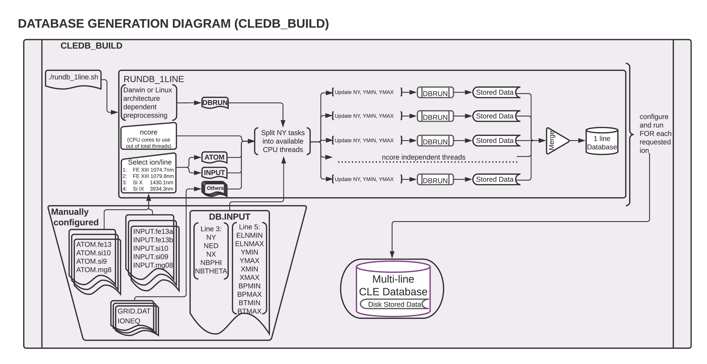

CLEDB_BUILD - Database Generation
Purpose:
The CLEDB_BUILD module is used to generate a database of synthetic IQUV profiles for the four provisioned ions, with a range of density estimations, range of possible LOS positions, and all possible magnetic angle configurations, for one magnetic field strength B = 1. In normal circumstances this module is only run once per system where the inversion is installed. A module diagram is provided in this section.
CLEDB_BUILD Configuration
Here we describe the scripts included in the config directory.
DB.INPUTMain configuration file for the database generation. It contains the physical parameters configurations for the databases to be generated.
* NY NED NX NBPHI NBTHETA * standard 51 10 61 180 90 51 10 61 180 90 * ELNMIN ELNMAX YMIN YMAX XMIN XMAX BPMIN BPMAX BTMIN BTMAX -1.5 2.3 1.000 1.500 -1.50 1.50 0.000 6.28318548 0.000 3.14159274 * above line is important to be kept with 3 spaces and same number of decimals for bash script to work
Danger
It is critical to keep the same number of parameter decimals and white spaces between the values when modifying the DB.INPUT configuration file. The automated job-scripts that run the jobs are dependent on precisely reading each entry.
ATOM.ionThis set of files contain the atomic configuration data to be used for calculations. Full level atoms would have a too high computational requirement to use. To avoid this, we use reduced calculations. For example take the Fe XIII lines. The atom configurations are set up as reduced 4-level and 6-transition calculations including the M1 and E1/E2 transitions from upper levels to M1 upper levels. See Fig. 3 of Casini & Judge, ApJ, 1999 This level/transition setup mimics the IQUV fluxes from a full level calculation for each of the the selected infrared coronal lines.
Caution
Advanced understanding required. In general, users should not modify the ATOM files.
INPUT.ion(a/b)These are input and configuration files that are read when generating databases. The wlmin and wlmax parameters control which lines described in the
ATOM.ionfiles are processed. In the case of Fe XIII, a separateINPUT.ionconfiguration (a/b) is needed for each line to produce distinct database entries.Hint
In the case of Fe XIII, a custom
INPUT.ionconfiguration with wlmin and wlmax constraints that includes both lines can be created. This would lead to the synthesis of a direct 2-line database. The sdb_preprocess function in theCLEDB_PREPINVmodule is provisioned to process such a database configuration. This is an alternate configuration that can be fairly straightforward to implement for a setup aimed at inverting only for the Fe XIII pair. Please note that this is a legacy feature that should not be treated as a default/expected configuration for generating databases.IONEQIonization equilibrium data from CHIANTI.
GRID.DATDefines the range and resolution of a CLE simulation. In the case of database building it has no significant functionality and is only required due to CLE’s implicit dependency on it’s import.
db"xxxx"\_"arch"Executable CLE binaries for generating databases. xxxx is the used version of the CLE Fortran code. arch can be linux, rclinux or darwin. The three different versions are provided in the distribution for cross-platform compatibility.
linux – Debian compiled
rclinux – CentOs compiled on research computing system.
darwin – mac osx x86 compiled.
Attention
Ideally, the xxxx version of the CLE code should match its latest stable release.
DB.INPUT Parameters
ny, ymin, ymaxNumber of y (horizontal) heights in R\(_\odot\) units for which to compute database entries. The
nyheights are spanned betweenyminandymaxvalues. Regardless of user input, polarization signal can not computed at this time for R\(_\odot\) < 1 due to the assumptions and interpretation focused on off-limb coronal emission.
Attention
Observations show that the amount of polarization in Fe XIII drastically decreases with height. One should not normally expect to reasonably recover full Stokes polarization signal at y > 1.5\(_\odot\).
ned, elnmin, elnmaxNumber and range of ambient electron density values for which to compute calculations.
elnminandelnmaxdefine a logarithmic range in which to spread theneddensities. The center of this range is an analytical approximation of a standard electron density expected for a y height above the limb following the Baumbach formulation. See equation 12 and discussion in Paraschiv & Judge, SolPhys, 2022 . For example, at y = 1.1R\(_\odot\) we expect a logarithm of density log(n\(_e\)) ~ 8 cm\(^{-3}\). Settingned= 10,elnmin= -2 andelnmax= 2 will generate databases for 10 density values logarithmically scaled between log(n\(_e\)) \(\approx\) 6 - 10 cm\(^{-3}\).
Attention
Please keep in mind some potential inversion breaking assumptions. A reasonable density range of log(n\(_e\)) 7-10 is compatible with:
low enough densities so that collisional depolarization becomes unimportant inside the Hanle saturated regime;
compatible with expected plasma densities in a standard 1.0-1.5R\(_\odot\) observation range (also remember above point about polarization vs. height).
nx, xmin, xmaxNumber of x (depth along the LOS) positions to compute databases for in R\(_\odot\) units. The
nxpositions are linearly spanned betweenxminandxmaxvalues.
Attention
Due to geometric considerations, setting xmin and xmax values to more than \(\pm\) 1.0 R\(_\odot\) will most probably not result in practical benefits. This is because a higher 1.5 R\(_\odot\) apparent height, a 1.0 R\(_\odot\) depth would correspond to an actual height above the limb of 1.8 R\(_\odot\). This is in the more extreme range of the polarization formation vs height issue described above.
nbphi, bpmin, bpmaxNumber and range of CLE magnetic LOS angles to compute. The
nbphiangles are spread along abpmin-bpmaxrange set to 0 - 2\(\pi\) by default.nbtheta, btmin, btmaxNumber and range of magnetic CLE azimuth angles to compute. The
nbthetarange is set tobtmin-btmax. By default this is set to a 0 - 1\(\pi\) reduced range due to spherical transformation definitions.
Danger
Due to how the problem is posed, please do not interchange the maximum ranges between the two magnetic angles, as it would lead to execution errors.
The CLEDB_BUILD Job Script
The rundb_1line.sh job script will ingest the ATOM, INPUT, DB.INPUT, etc. files and split the job into available CPU threads. The user is asked for keyboard input on how many threads to use and for which line/ion to generate a database.
{kind=link}
The script runs in a Bash shell terminal session. It can handle both Linux and Darwin (OSX) environments. For OSX, an additional dependency is required. Users need to install the GNU implementation of the sed command. The simplest way is to achieve this is by using the homebrew environment:
brew install gnu-sed
The job script will split the serial ny tasks on the requested CPU threads and run in dedicated folders that will be sanitized upon completion, preserving only the output database files and metadata headers.
Logs for each script (“X”) are written in real time and can be checked interactively while the job is running.
tail BASHJOB_"X".LOG
A Slurm enabled version, rundb_1line_slurm which has hard-coded choices to be compatible with headless runs is also provided. The parameters need to be checked manually before running. Detailed information about the Slurm enabled routines can be found in the detailed README-SLURM section.
Note
A standalone README-SLURM.MD readme is included in the inversion root directory.
Extensive notes about the parallel job script implementations are found in the detailed README-RUNDB section.
Note
A standalone README-RUNMD.md readme is included with the CLEDB_BUILD module.
CLEDB_BUILD Output
Databases for one up to four of the currently available ions/lines can be constructed by running the job script successively.
Tip
As long as enough free CPU threads are available, multiple rundb_1line.sh jobs can be started simultaneously for different ions as there is no storage or computational overlap.
The output database is written to the storage disk. Each individual line will be written in its dedicated folder.
Note
Prior to git commit update-iqud CLEDB_BUILD wrote compressed data using a simple float64 \(\rightarrow\) int16 conversion using a division constant, set to -2.302585092994046e15. Same constant needs to be used when writing but also when reading databases into memory as part of the CLEDB_PREPINV module. This approach proved to create numerical instabilities and is currently disabled.
A database folder hierarchical system is needed in order to ingest the selected database calculations by the CLEDB_PREPINV module. The folder system is defined as: element-ionstage_line.
fe-xiii_1074
fe-xiii_1079
si-x_1430
si-ix_3934
Note
A fifth option for directly writing two line databases for Fe XIII is still preserved as a legacy option as described above. The .hdr and .DAT database files need to be placed in the main ctrlparams dbdir key without a specific line subfolder.
This convention is used by all three modules of CLEDB.
Warning
Running successive jobs for the same ion/line will erase its database calculations if they exist!
Individual data stores for each computed height are created to ease I/O operations when reading databases into memory for inverting. A db”xxxx”.dat file is generated at each y height in the ny set, where “xxxx” represents the distance above the limb in units of R\(_\odot\) (DB0000.dat corresponds to the solar limb or a height of 1.00R\(_\odot\)). A metadata db.hdr file is produced in the individual line directory that contains the range dimensions and parameters applicable to any one database set of files.
Danger
The user should not change the parameter configurations in DB.INPUT between multiple ion/line runs that should be part of the same database.
Generating \(\sim\) 5 \(\cdot\) 10\(^8\) calculations per line for two lines will occupy \(\approx\) 32 Gb of disk space with no storage compression.